Getting started with Alohar
This is a primer on installing and using Alohar in your projects. For an overview of the SDK and details on specific usage, please go to our full documentation.
Register your iOS app
Go to https://www.placemeapp.com/developer/, and follow the directions there to set up your account.
There are two things you need from the signup process. Your App ID, and your App Secret.
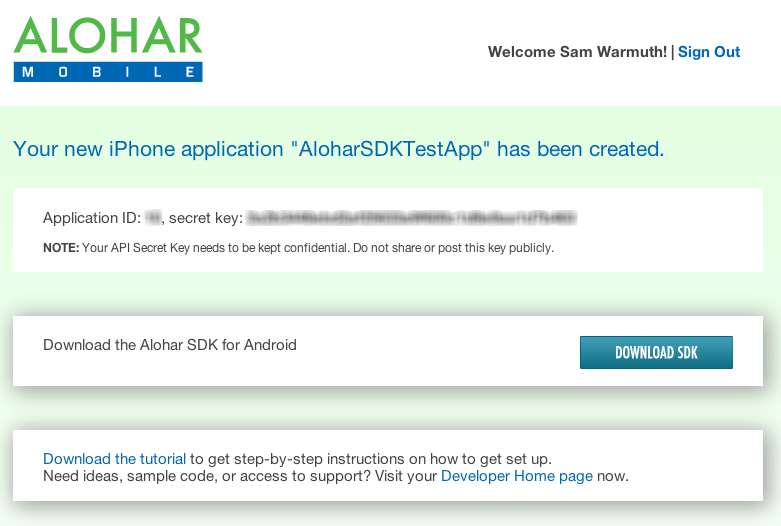
Installing Alohar SDK
Create a new Xcode Project
If you haven't yet, create a new Xcode project. If you need help, this tutorial is very helpful: Getting started with Xcode projects tutorial from Apple.
For this example project, we're going to use a "Single View Application".
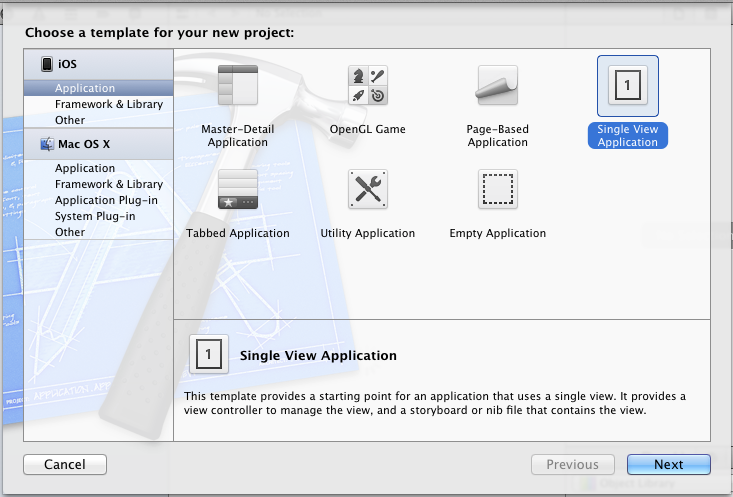
Download the SDK
First, download the Alohar SDK Framework. Drag the "Alohar.framework" folder from the download into the "Frameworks" folder in your Xcode project, and make sure to turn on "Copy items to destination group's folder".
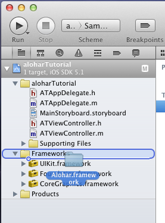 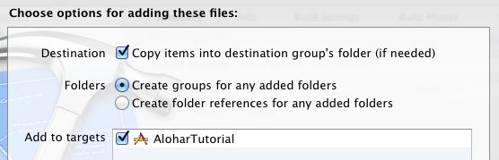
Add Linked Libraries
Alohar needs a few standard libraries to be included in the project in order to function. In Xcode, go to the "Build Phases" section of your target (see image below for path to "Build Phases"), and add these libraries:
- CFNetwork.framework
- CoreTelephony.framework
- CoreLocation.framework
- SystemConfiguration.framework
- MobileCoreServices.framework
- CoreMotion.framework
- libz.dylib
Also, notice that Alohar.framework has been automatically included in the library list.
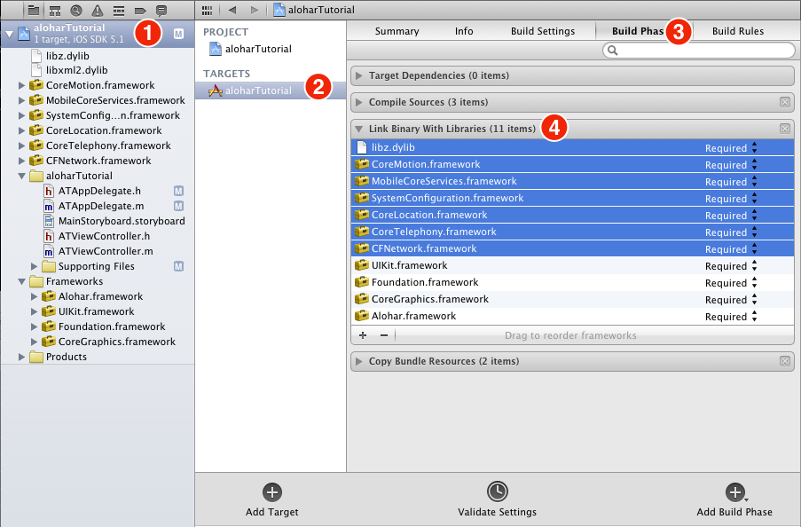
Add background location support
Alohar's automatic location service requires background location data to work. To support this, with your project target still selected, go to the "Info" tab. Right click within the "Custom iOS Target Properties" and choose "Add Row". Type "Required background modes" and hit enter. Click on the triangle at the left of the new row to expand, and then type "App registers for location updates" in the value column of the row that says "Item 0".
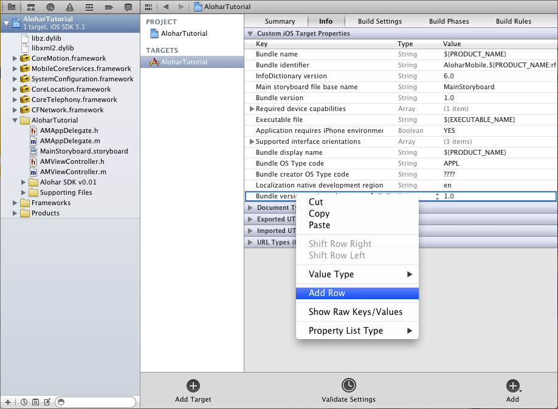 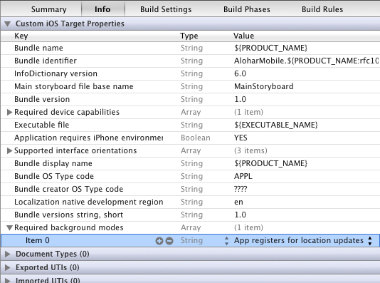
Add -all_load to Linker Flags
The final setup step is to set "-all_load" in your project's linker flags. Click on the "Build Settings" tab, make sure "all" is the selected filter, then scroll down until you see "Other Linker Flags" in the "Linking" section. double click on the empty value area to the right of the label, and enter "-all_load". Here's a screenshot of the finished step:
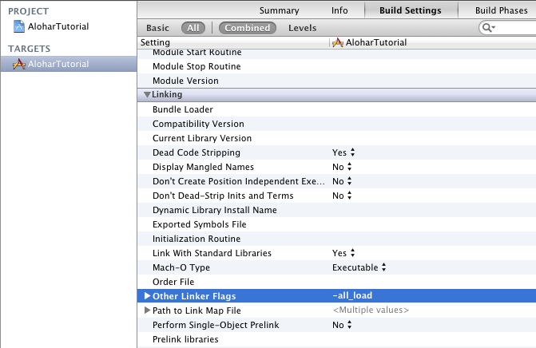
Basic Usage
Add import, session delegate
Open your AppDelegate header file (--AppDelegate.h), and just below #import <UIKit/UIKit.h>, add #import <Alohar/Alohar.h>
Then add ALSessionDelegate just after UIApplicationDelegate. See the image below to view the completed step.
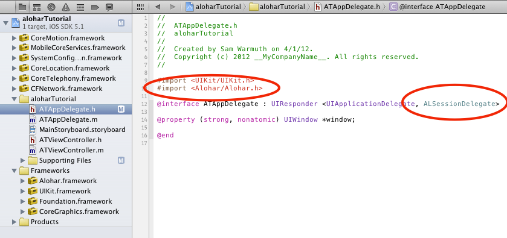
Starting a Session
The final step to get placeme up and running is to call the startSession method with the token and secret you received when signing up for Alohar. Add this line to the application:didFinishLaunchingWithOptions method of your AppDelegate.m file.
[Alohar registerWithAppID:@"APP_ID"
andAPIKey:@"APP_SECRET"
withDelegate:self];The registerWithAppID method is asynchronous -- session success or failure will be relayed to callback methods -- either aloharDidLogin, or aloharDidFailWithError. If the user is successfully logged in, we can start monitoring their state. Note: the user will see YOUR_APP would like to use your current location dialog when you call startMonitoringUser.
- (void)aloharDidLogin:(NSString *)userToken
{
NSLog(@"User is logged in!");
[Alohar startMonitoringUser];
}
- (void)aloharDidFailWithError:(NSError *)error
{
NSLog(@"User couldn't be logged in! Error: %@", error);
}After these changes, our AppDelegate.m file looks like this:
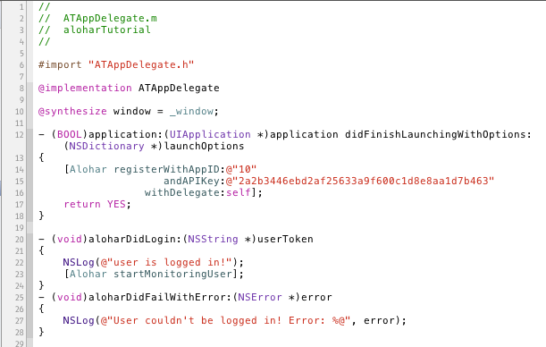
Monitoring User Changes
So, we're monitoring the user, but we can't see anything. Let's hook up a callback in our ViewController file. In the ViewController.h file, add #import <Alohar/Alohar.h>, and add the ALMotionDelegate protocol (see finished step below).
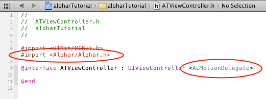
The final step is to set your view controller as the motion delegate in viewDidLoad, and catch any callbacks using didUpdateToMotionState:fromMotionState.
[Alohar setMotionDelegate:self];
- (void)didUpdateToMotionState:(ALMotionState *)newMotionState
fromMotionState:(ALMotionState *)oldMotionState
{
NSLog(@"New Motion State: %@", newMotionState.stateDescription);
}
That's it! You've created a working Alohar app. Mimic the action of walking (rhythmic swinging) and see your motion state update to walking! This is only one of many features on the Alohar platform. Please check out our full documentation for more info.
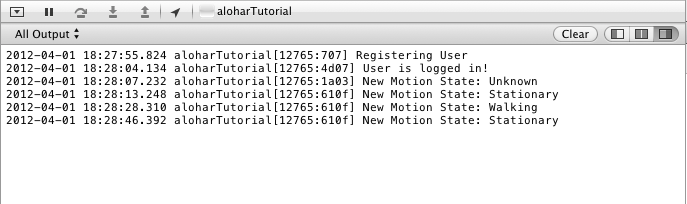